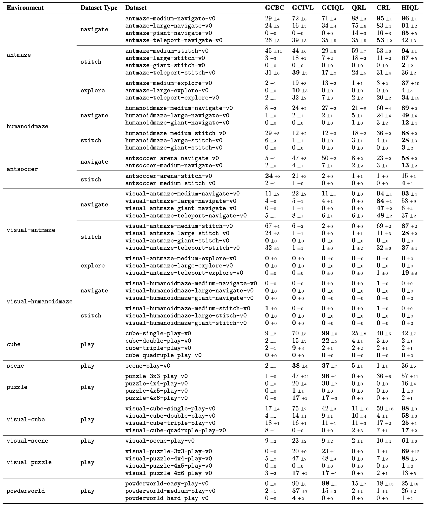

OGBench: Benchmarking Offline Goal-Conditioned RL
Anonymous Authors
Manipulation Tasks
Cube
cube-quadruple-play
Example dataset trajectory
cube-quadruple
Task: permute cubes
cube-quadruple
Task: stack cubes
Scene
scene-play
Example dataset trajectory
scene
Task: unlock drawer and put cube in it
scene
Task: unlock, open, and lock
drawer and window, then move cube
Puzzle
puzzle-4x6-play
Example dataset trajectory
puzzle-3x3
Task: turn all buttons blue
puzzle-4x5
Task: turn all buttons blue
Visual Manipulation
visual-cube-double-play
Example dataset trajectory
visual-scene-play
Example dataset trajectory
visual-puzzle-4x4-play
Example dataset trajectory
Locomotion Tasks
AntMaze
antmaze-teleport-navigate
Example dataset trajectory
antmaze-giant-navigate
Example dataset trajectory
AntMaze (Dataset Types)
navigate
antmaze-large-navigate
Example dataset trajectory
stitch
antmaze-large-stitch
Example dataset trajectories
explore
antmaze-large-explore
Example dataset trajectories
HumanoidMaze
humanoid-medium-navigate
Example dataset trajectory
humanoidmaze-giant-navigate
Example dataset trajectory
AntSoccer
antsoccer-arena-stitch
Example dataset trajectory
antsoccer-medium-navigate
Example dataset trajectory
Visual Locomotion
visual-antmaze-teleport-navigate
Example dataset trajectory
visual-humanoidmaze-medium-navigate
Example dataset trajectory
Drawing Tasks
Powderworld
powderworld-hard-play
Example dataset trajectories
powderworld-hard
Task: bubbles
powderworld-hard
Task: firework
powderworld-hard
Task: three-rooms
powderworld-hard
Task: four-squares
powderworld-hard
Task: ice-plant
Benchmarking Results

The website template was borrowed from Michaël Gharbi and Jon Barron.